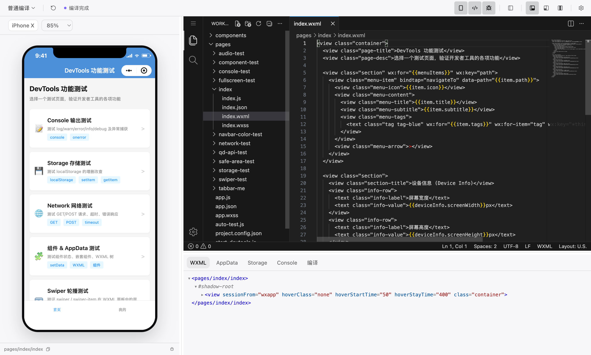

编辑与预览并排
内嵌 VS Code 编辑器与小程序模拟器共享同一个工作台，修改代码后可以直接查看运行结果。
开源 · 跨平台 · 可组合
Dimina DevTools 把项目编辑、模拟器预览和调试面板放进同一个桌面工作台，也把编译与运行能力拆成可以独立使用的包。
支持 macOS · Windows · Linux

一个窗口，完整开发路径
从写代码到看运行结果，再到定位页面数据与网络问题，不必在多个应用之间来回切换。
内嵌 VS Code 编辑器与小程序模拟器共享同一个工作台，修改代码后可以直接查看运行结果。
直接使用 Chrome DevTools，并提供 WXML、AppData、Storage、Console 和编译面板。
切换不同手机和平板，检查屏幕、安全区、状态栏与挖孔对页面布局的影响。
编译器、H5 预览服务和 Electron 运行时都已拆成独立包，可以接入自己的宿主或 Node.js 工具链。
查看所有开发包Dimina DevTools 0.4.0
下载即可使用。其他版本与更新记录可以在 GitHub Releases 查看。
为自己的产品接入